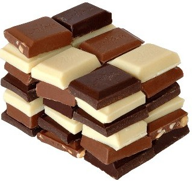

Pila de chocolate
Su preparación se efectuaba de la siguiente manera: las semillas eran primero tostadas y luego molidas para hacer una pasta que después se mezclaba con agua. Esta mezcla se calentaba hasta que la manteca o grasa del cacao subía a la superficie.
| Contenidos por 100 gramos | Cacao en polvo desgrasado (materia prima) |
Chocolate | Chocolate con leche | Chocolate blanco | Soluble de cacao |
|---|---|---|---|---|---|
| Energía (kcal) | 255 | 449-534 | 511-542 | 529 | 330-375 |
| Proteínas (g) | 23 | 4,2-7,8 | 6,1-9,2 | 8 | 4-7 |
| Hidratos de carbono (g) | 16 | 47-65 | 54,1-60 | 58,3 | 78-82 |
| Almidón | 13 | 3,1 | 1,1 | - | 2-8 |
| Azúcares (g) | 3 | 50,1-60 | 54,1-56,9 | 58,3 | 70-78 |
| Fibra (g) | 23 | 5,9-9 | 1,8 | - | 7 |
| Grasas (g) | 11 | 29-30,6 | 30-31,8 | 30,9 | 2,5-3,5 |
| Grasa saturada (g) | 6,5 | 15,1-18,2 | 17,6-19,9 | 18,2 | 1,5-2,1 |
| G. monoinsaturada (g) | 3,6 | 8,1-10 | 9,6-10,7 | 9,9 | 0,8-1,1 |
| G. Poliinsaturada (g) | 0,3 | 0,7-1,2 | 1,0-1,2 | 1,1 | 0,1 |
| Sodio (g) | 0,2 | 0,02-0,08 | 0,06-1,12 | 0,11 | 0,07-0,13 |
| Potasio (g) | 2 | 0,4 | 0,34-0,47 | 0,35 | 0,44-0,9 |
| Calcio (mg) | 150 | 35-63 | 190-214 | 270 | 30-300 |
| Fósforo | 600 | 167-287 | 199-242 | 230 | 140-320 |
| Hierro (mg) | 20 | 2,2-3,2 | 0,8-2,3 | 0,2 | 4-9 |
| Magnesio (mg) | 500 | 100-113 | 45-86 | 26 | 100-125 |
| Cinc (mg) | 9 | 1,4-2,0 | 0,2-0,9 | 0,9 | 2 |
| Vit A (UI) | 3 | 3 | 150-165 | 180 | 1 |
| Vit E (mg) | 1 | 0,25-0,3 | 0,4-0,6 | 1,14 | 0,2 |
| Vit B1 (mg) | 0,37 | 0,04-0,07 | 0,05-0,1 | 0,08 | 0,07 |
| Vit B6 (mg) | 0,16 | 0,04-0,05 | 0,05-0,11 | 0,07 | 0,03 |
| Ac. fólico (micro g) | 38 | 6-10 | 5-10 | 10 | 7,6 |
Ventajas de comer chocolate
El chocolate tiene muchas bondades tanto anímicas como a nivel físico ¡Pero cuidado! No es bueno todo el chocolate; para sacar partido a estas ventajas debemos elegir un chocolateque contenga al menos un 50% de cacao. Olvida hoy mismo el chocolate blanco y el chocolate con leche, y elige el chocolate negro más puro, el que mayores beneficios nos otorga.
- Lo primero a destacar es su gran poder antidepresivo, no es de extrañar que regalar bombones de chocolate sea un típico símbolo de cariño, aprecio y buenos deseos. Al segregar serotonina nos hace sentirnos calmados en situaciones tensas, pero además segrega endorfinas que actúan en nuestro cerebro liberándonos del estrés y subiendo nuestro ánimo.
- Mejora la capacidad de concentración, más que el café y que el té negro.
- Es un alimento que sacia nuestra hambre y reduce la ansiedad.
- Es una fuente rica en almidón, grasas saludables, proteínas, vitamina A, ácido fólico, fibra y antioxidantes.
- Ayuda a la circulación sanguínea.
- En dosis moderadas ayuda a mejorar el síndrome de fatiga crónica.
- Reduce la tensión arterial, por lo que puede considerarse un aliado de las personas hipertensas.
- Ayuda a reducir el colesterol.
- Es rico en magnesio y es una fuente de energía perfecta para deportistas.
- También contiene hierro, que evita la anemia y refuerza nuestro sistema inmunológico.